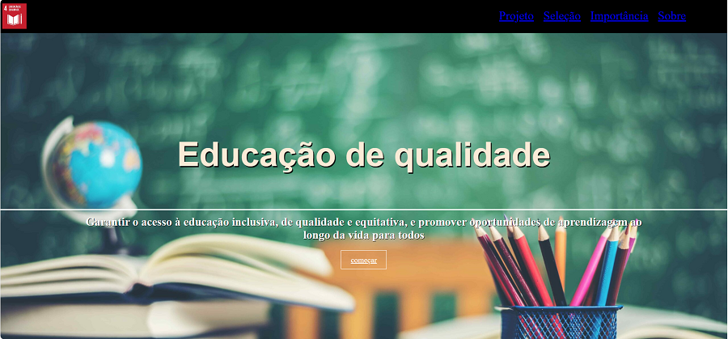
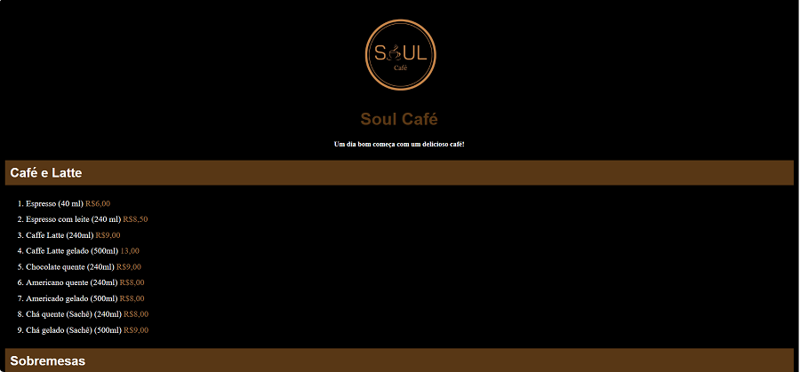
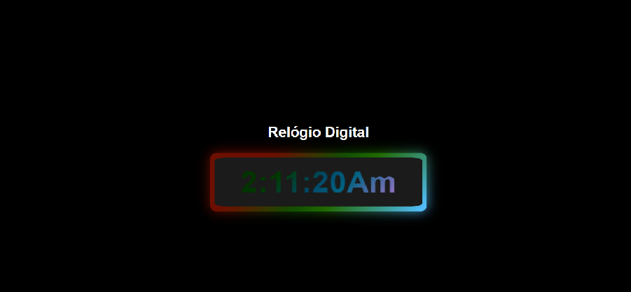
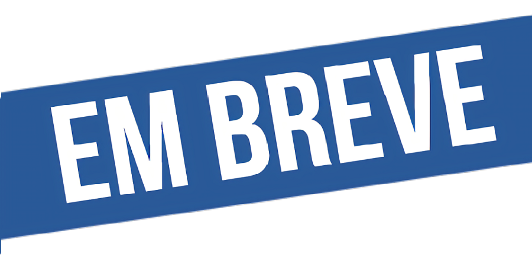

Projeto ODS4
Projeto desenvolvido durante o curso do "Inspera Já", Baseado na ODS4 (projeto da ONU).
Linguagens utilizadas: HTML: 79%, CSS: 20.1%

Cardápio
Neste projeto elaborado no curso ElasNaTech, foi criado um cardápio para uma cafeteria.
Linguagens utilizadas: HTMl: 74.2%, CSS 25.8%

Relógio Digital
Criado durantecom muito carinho durande o curso ElasNaTech.
Linguagens utilizadas: CSS: 57.3% JavaScript : 21.8%, HTML:20.9%

Aguarde
Em construção....